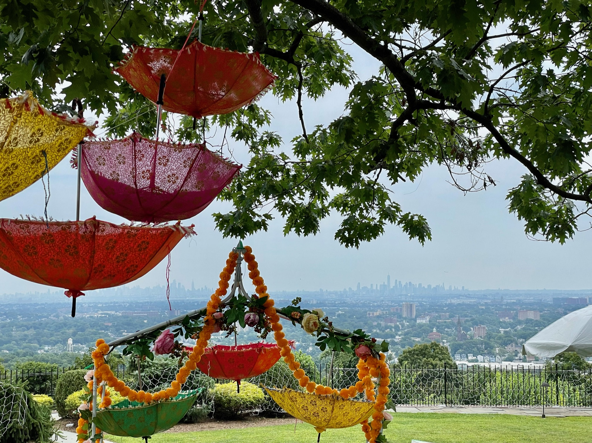

Ever since I was 5, I spent half of my time working on school and my other half playing tennis. It has been over 11 years since that point, and it all started at the Menlo Circus Club. I took a liking to the sport since it felt so fast paced while also being so independent.
Talking about my family, my dad immigrated from India at the age of 5 and my mom has always lived in the United States. I've taken part in many of my dad's traditions, usually attending Indian weddings with his family mainly in the east coast.
I also have one dog and two older sisters, one who has graduated form dartmouth and the other is a sophmore at UCLA.
I attended Trinity Elemntary school and am now a a junior at Menlo Highschool. As a student, I've gained intrest in many other fields, especilly more in computer science. I have taken all the courses for computer science as I could at Menlo and am now taking AT CS.

Today, I practice my tennis at the Plus One academy (originally named Pure Pace) located in Ladera Rec. In this picture is my friend, Same Engel, who also attends my academy. For the past two highschool years,
I have been at the top of our school's junior varsity team and have gone undefeated as either number one or number two singles indivudally during our team matches. In 2023, I will hopefully
be joining our school's varisty roster and keep our trend of being part of the top in the nation.
I also now volunteer as an aistant coach at an orginazation called 'EPATT' (East Palo Alto Tennis & Tutoring) during the summer and the first semester of each school year.
Ultimately, tennis has been one of the biggest factors in my life and it is a sport that helps me and encourages me to strive for more.